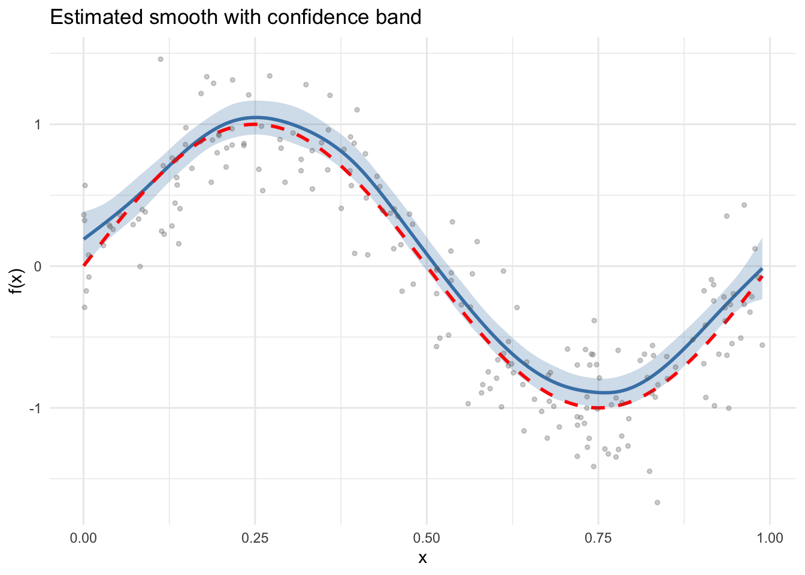
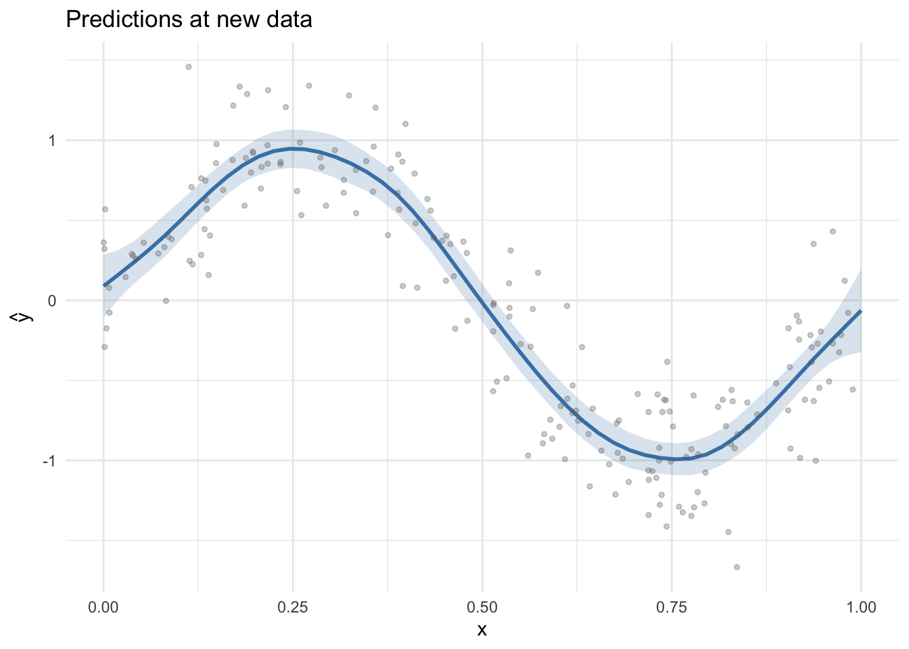
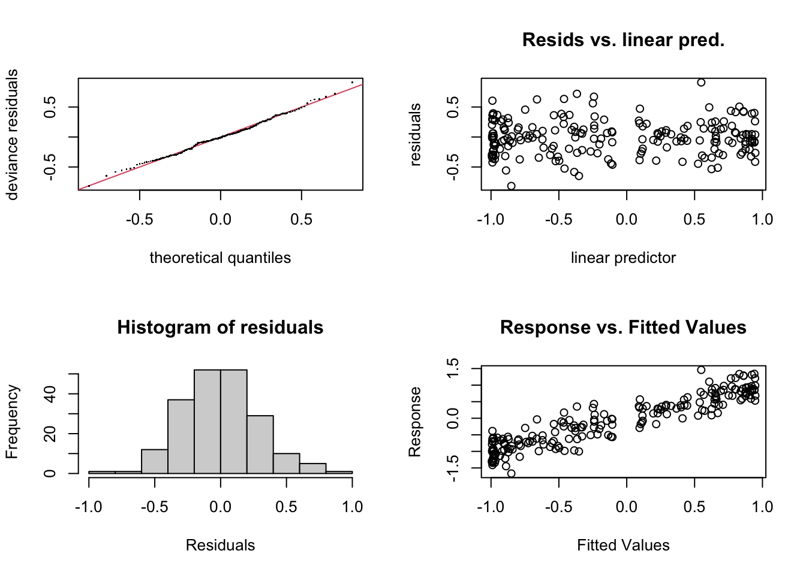

library(mgcv)Loading required package: nlmeThis is mgcv 1.9-3. For overview type 'help("mgcv-package")'.library(gratia)
library(ggplot2)A Generalized Additive Model (GAM) extends the linear model by replacing linear predictor terms with smooth functions of covariates. The model takes the form:
\[ g(\mu_i) = \beta_0 + f_1(x_{1i}) + f_2(x_{2i}) + \cdots + f_p(x_{pi}) \]
where \(g\) is a link function, \(\mu_i = \mathbb{E}(y_i | \mathbf{x}_i)\), and each \(f_j\) is a smooth function estimated from the data using penalized regression splines.
The smooth functions are represented as linear combinations of basis functions:
\[ f_j(x) = \sum_{k=1}^{K_j} \beta_{jk} \, b_{jk}(x) \]
Smoothness is controlled by a wiggliness penalty, and the smoothing parameter \(\lambda\) is estimated automatically (e.g., by REML).
This vignette demonstrates fitting a simple GAM to simulated data using mgcv in R.
library(mgcv)Loading required package: nlmeThis is mgcv 1.9-3. For overview type 'help("mgcv-package")'.library(gratia)
library(ggplot2)We load \(n = 200\) observations generated from a sine curve with Gaussian noise:
\[ y_i = \sin(2\pi x_i) + \varepsilon_i, \quad \varepsilon_i \sim \mathcal{N}(0, 0.3^2) \]
dat <- read.csv("../data.csv")
x <- dat$x
y <- dat$y
n <- nrow(dat)
df <- data.frame(x = x, y = y)
head(df) x y
1 0.0002388966 0.36179064
2 0.0013808436 0.32210131
3 0.0015705542 -0.29109467
4 0.0022729661 0.56882555
5 0.0039483388 -0.17522642
6 0.0073341469 0.07771964We fit a GAM with a cubic regression spline (bs = "cr") smooth of x using 15 basis functions:
m <- gam(y ~ s(x, k = 15, bs = "cr"), data = df, method = "REML")
summary(m)
Family: gaussian
Link function: identity
Formula:
y ~ s(x, k = 15, bs = "cr")
Parametric coefficients:
Estimate Std. Error t value Pr(>|t|)
(Intercept) -0.1002 0.0205 -4.888 2.15e-06 ***
---
Signif. codes: 0 '***' 0.001 '**' 0.01 '*' 0.05 '.' 0.1 ' ' 1
Approximate significance of smooth terms:
edf Ref.df F p-value
s(x) 7.722 9.369 122.5 <2e-16 ***
---
Signif. codes: 0 '***' 0.001 '**' 0.01 '*' 0.05 '.' 0.1 ' ' 1
R-sq.(adj) = 0.852 Deviance explained = 85.8%
-REML = 49.744 Scale est. = 0.08403 n = 200The model summary shows parametric coefficients, smooth term EDF, deviance explained, and scale estimate.
cat("Number of observations:", nobs(m), "\n")Number of observations: 200 cat("EDF per smooth: ", round(pen.edf(m), 2), "\n")EDF per smooth: 7.72 cat("Deviance explained: ", round(summary(m)$dev.expl * 100, 1), "%\n")Deviance explained: 85.8 %cat("Scale estimate: ", round(m$scale, 4), "\n")Scale estimate: 0.084 The gratia::smooth_estimates() function evaluates the estimated smooth on a regular grid and returns pointwise standard errors:
se <- smooth_estimates(m, n = 200)
head(se)# A tibble: 6 × 6
.smooth .type .by .estimate .se x
<chr> <chr> <chr> <dbl> <dbl> <dbl>
1 s(x) CRS <NA> 0.190 0.0976 0.000239
2 s(x) CRS <NA> 0.208 0.0915 0.00521
3 s(x) CRS <NA> 0.226 0.0859 0.0102
4 s(x) CRS <NA> 0.244 0.0809 0.0151
5 s(x) CRS <NA> 0.263 0.0765 0.0201
6 s(x) CRS <NA> 0.281 0.0729 0.0251 We plot the smooth estimate with ±2 SE confidence bands, overlaying the true function:
ggplot(se, aes(x = x, y = .estimate)) +
geom_ribbon(aes(ymin = .estimate - 2 * .se, ymax = .estimate + 2 * .se),
alpha = 0.25, fill = "steelblue") +
geom_line(linewidth = 1, colour = "steelblue") +
geom_line(aes(y = sin(2 * pi * x)), linetype = "dashed",
linewidth = 1, colour = "red") +
geom_point(data = df, aes(x = x, y = y), alpha = 0.3, size = 1, colour = "grey40") +
labs(x = "x", y = "f(x)", title = "Estimated smooth with confidence band") +
theme_minimal()
We can predict at new covariate values with standard errors:
x_new <- data.frame(x = seq(0, 1, length.out = 50))
pred <- predict(m, newdata = x_new, type = "response", se.fit = TRUE)
x_new$fit <- pred$fit
x_new$se <- pred$se.fit
ggplot(x_new, aes(x = x, y = fit)) +
geom_ribbon(aes(ymin = fit - 2 * se, ymax = fit + 2 * se),
alpha = 0.2, fill = "steelblue") +
geom_line(linewidth = 1, colour = "steelblue") +
geom_point(data = df, aes(x = x, y = y), alpha = 0.3, size = 1, colour = "grey40") +
labs(x = "x", y = expression(hat(y)), title = "Predictions at new data") +
theme_minimal()
mgcv estimates the smoothing parameter \(\lambda\) by minimizing the Restricted Maximum Likelihood (REML) criterion by default. REML is generally preferred over GCV because it:
cat("Estimation method:", m$method, "\n")Estimation method: REML cat("Smoothing parameter (log):", log(m$sp), "\n")Smoothing parameter (log): 4.278883 The gam.check() function provides diagnostic plots and basis dimension checks:
par(mfrow = c(2, 2))
gam.check(m)
Method: REML Optimizer: outer newton
full convergence after 4 iterations.
Gradient range [-6.776588e-10,3.284431e-10]
(score 49.74438 & scale 0.08402973).
Hessian positive definite, eigenvalue range [3.328508,99.11809].
Model rank = 15 / 15
Basis dimension (k) checking results. Low p-value (k-index<1) may
indicate that k is too low, especially if edf is close to k'.
k' edf k-index p-value
s(x) 14.00 7.72 1.09 0.93par(mfrow = c(1, 1))In this vignette we:
k = 15 basis functionsThe next vignette compares different smooth basis types.